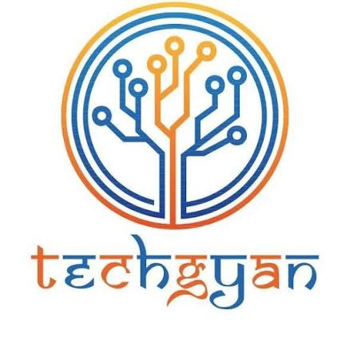
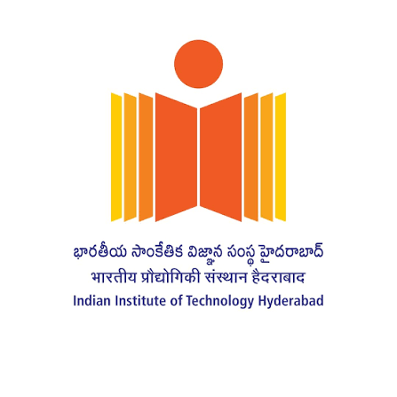

May — Jul 2026 · Hyderabad
Product Management Intern
Country Delight
Worked across AOV growth, product experimentation, user research, analytics and personalization.
→
A curious problem solver interested in products, mathematics, finance and technology.
I'm a final-year Civil Engineering student at IIT Hyderabad, interested in the intersection of products, data, mathematics, finance, and technology.
I genuinely enjoy mathematics and the logic behind complex problems. I'm also fascinated by businesses and financial markets, and regularly follow and invest in stocks.
Professionally, I enjoy combining product thinking, analytical reasoning, and technology to build useful solutions. Outside of that, I'm a big board game enthusiast — especially strategy games built around probability, planning, and decision-making.
A closer look at the problems I've worked on, how I approached them, and what I learned along the way.
Worked across AOV growth, product experimentation, user research, analytics and personalization.

Worked side by side across SEO, digital growth, customer automation, product research and business execution.

Conducted literature review, market analysis and Fortune 500 case studies on front-end innovation and corporate intrapreneurship.
A mix of product concepts, AI systems, analytics projects and technical experiments.
An agentic booking system that separates LLM-based preference parsing from a deterministic fair allocator for oversubscribed slots.
Explore project →An AI-assisted SQL performance tool that analyses queries, diagnoses optimisation opportunities, validates rewrites and explains the expected impact.
Explore project →Analysed ~99K Olist orders across revenue, AOV, retention, delivery and category performance using Python, SQL and Power BI, then translated findings into product recommendations.
Explore project →Designed an end-to-end UPI settlement flow that keeps expense tracking and payment inside one seamless mobile journey.
Explore project →SQL analysis of customer spending, transaction categories, credit-card usage and high-value behaviour across a synthetic finance dataset.
Explore project →Explored diffusion and CNN approaches for structural topology optimisation under noisy and incomplete boundary conditions.
Explore project →Selected case competitions and product strategy work — with the thinking, analysis, and decisions behind the final output.
National finalist case on treasury transformation, financial risk, liquidity management and technology for a multinational operating across five geographies.
Explore case study →Reimagining urban markets as predictive neighbourhood infrastructure using consumption forecasting, micro-hubs and Gemini-powered orchestration.
Explore case study →A margin-growth strategy for Brown Bear Bakers, combining premium gifting, behavioural pricing and a clearer product-value ladder.
Explore case study →Roles across student organisations, spanning corporate relations, finance, media, events and community-led initiatives.
Led sponsorship and corporate partnership efforts while working across finance, outreach and stakeholder management.
View role →Worked across corporate relations, finance, media and publicity, supporting initiatives across multiple functional domains.
View role →Contributed to public relations and outreach initiatives for the institute's annual technical and cultural festival.
View role →Supported PR planning and execution across outreach campaigns, collaborations and festival communications.
View role →Contributed to club activities and helped organise sessions and community experiences around books, films and discussion.
View role →Conducted product teardown sessions and supported Horizon, the club's annual event.
View role →A compact view of the tools I use to build, analyse and ship.
 Python
Python SQL
SQL PostgreSQL
PostgreSQL Machine Learning
Machine Learning AI / LLM Applications
AI / LLM Applications Power BI
Power BI Excel
Excel MoEngage
MoEngage Jira
Jira Figma
Figma Git / GitHub
Git / GitHub FastAPI
FastAPIMy first hands-on product role — working with real users, real behavioural data, and real business constraints to understand how a milk-led subscription product could grow Average Order Value.
Country Delight had a strong recurring milk business, but many users primarily purchased milk. The product opportunity was to make relevant products easier to discover and increase AOV without relying on generic cross-sell.
I used SQL, MoEngage and CRM funnel data to understand user behaviour and identify meaningful cohorts. One important finding was a Calendar-only user cohort. I paired the quantitative analysis with 50+ user interviews to understand product-discovery, pricing and pack-size pain points.
Used SQL and CRM/MoEngage data to investigate journeys, purchase behaviour and cohort-level opportunities.
Spoke with users to connect behavioural patterns with the reasons behind product discovery and purchase decisions.
I translated the Calendar insight into two product interventions and worked through the experiment design, tracking CTR, Add-to-Cart rate, order conversion and AOV. Together, the interventions contributed ₹10L+ in incremental revenue over two months.
I also designed a personalised recommendation framework for cross-sell and AOV growth. The idea moved beyond simply showing popular products: recommendations could combine individual behaviour, segment trends and category-level signals, while reducing the score of products repeatedly ignored by a user.
I developed the scoring logic in Python and worked with Data Science/business stakeholders on the direction. The later LinUCB contextual-bandit optimisation and broader automated architecture were designed as the next stage rather than presented as shipped production functionality.
The goal was not simply “build a recommendation model.” It was to solve a product problem: help users discover something genuinely relevant while creating more opportunities for cross-sell and higher AOV.
During the internship, I also developed a broader product concept that moves beyond individual product recommendations and turns everyday deliveries into a simple, visible wellness journey. The concept is planned for implementation next year, so I am presenting it here as a product I designed rather than something already shipped.
A single health-oriented score on the Country Delight home page — inspired by the simplicity of a fitness score or activity ring — that helps customers understand the quality and consistency of their household's everyday food choices.
Give users an immediate, easy-to-understand view of how their household is doing instead of making them interpret multiple disconnected metrics.
The product focuses on the nutritional and wellness characteristics of what a household purchases, rather than turning the experience into a judgement of the person.
Measure whether important food groups and wellness-oriented needs are being covered across regular purchases rather than reducing health to calorie counting.
Surface the benefits a household is already getting and then highlight the highest-priority areas where a small change could improve the score.
Instead of simply saying what is missing, translate a gap into a relevant basket or set of products that can be added to an upcoming delivery.
Make the score dynamic: as users add better-balanced products, the progress becomes visible and each delivery contributes to a longer-term wellness journey.
This idea helped me think beyond individual features. I had to connect customer value, behavioural change, product discovery, recurring usage and business opportunity into one coherent product experience.
Applied product discovery, user-journey thinking and experimentation to turn a broad AOV goal into specific interventions.
Applied SQL, cohort analysis and funnel thinking to identify where behaviour suggested a product opportunity.
Used Python to translate recommendation ideas into a concrete scoring framework that could be discussed with technical teams.
Used user conversations to validate whether the patterns in the data reflected real product pain points.
“Start with the user problem. Validate it with data and research. Then build and test the smallest useful solution.”
Country Delight taught me how different pieces of product work connect in practice — analytics helps find the opportunity, research helps explain it, product thinking turns it into a hypothesis, and experimentation tells you whether the solution actually creates value.
I worked across TechGyan and Dyna Writing Instruments side by side, supporting two businesses through a mix of digital growth, SEO, customer automation, product research and business execution.
I analysed website KPIs and SEO performance using Google Analytics and keyword tools to understand where organic discovery could be improved. The work focused on targeted keywords, content opportunities and search visibility rather than treating traffic as a standalone metric.
Used Google Analytics and keyword tools to evaluate website KPIs, organic performance and opportunities for search-driven growth.
Worked on targeted keywords and SEO execution, contributing to a 40%+ increase in organic traffic and improving rankings from 8th to 2nd for targeted keywords.
I integrated the OpenAI API with Python to build a chatbot for automating customer-support responses. The project gave me hands-on exposure to taking an AI capability and connecting it to an actual business workflow rather than treating it as a standalone technical experiment.
The chatbot reduced customer-support response time by 30%, helping make repetitive support interactions faster and more scalable.
I conducted user research and competitor benchmarking across 5+ product variants and 5 hybrid training programs. The work involved understanding what users and competitors were doing, converting those observations into product requirements, and coordinating with vendors to move execution forward.
Benchmarked competing offerings and gathered user insights to understand product expectations, positioning and gaps.
Translated research into product requirements and coordinated with vendors to support implementation across offerings.
Because the same CEO led both businesses, I worked across TechGyan and Dyna rather than treating them as isolated internships. That meant switching between digital growth questions, customer-facing automation, product research and execution depending on the immediate business need.
This was where I started seeing how closely product and business growth are connected: better discovery brings users in, better products give them a reason to stay, and better systems make the experience easier to scale.
Learned to connect SEO and website metrics to concrete growth opportunities instead of optimising vanity metrics.
Learned how APIs and Python can be used to solve repetitive business problems and improve operational speed.
Used user and competitor research to make product requirements more grounded in actual market needs.
Coordinated with vendors and business stakeholders to turn analysis and requirements into execution.
Our case tackled treasury transformation for a large Indian multinational operating across five geographies, with a focus on currency risk, liquidity, forecasting, cash pooling, working capital and treasury technology.
ABC Company was modelled as a multinational with ₹17,500 Cr annual revenue, ₹1,458 Cr monthly cash flows and ₹3,016 Cr in surplus cash. The central challenge was managing liquidity and financial risk across markets with very different levels of currency volatility and regulatory complexity.
USD/NGN volatility, USD shortages and regulatory hurdles increased payment uncertainty and could inflate the cost of USD obligations.
Cash balances, FX exposures and funding needs across geographies created an opportunity for centralised visibility and smarter allocation.
The case estimated $10.3M of annual FX-related risk exposure from a $2M monthly USD outflow in Nigeria, alongside 43% one-year USD/NGN volatility. These figures formed the basis for the risk-management strategy presented in the case.
The proposed guardrails included a 70% hedge coverage target, a 30% limit on unhedged FX exposure, a 25% maximum single-counterparty exposure and a minimum AA- credit-rating standard.
We structured the solution as a set of connected interventions rather than a single financial product: hedge the right exposures, improve natural offsets, centralise liquidity, modernise treasury infrastructure and create a disciplined surplus-cash investment framework.
Forwards, options, currency swaps, natural hedging and diversification were combined to address different exposure types and time horizons.
Phased pooling across India, USA, UK, China and Nigeria was modelled to improve interest returns, reduce external borrowing and optimise multi-currency liquidity.
A three-phase treasury technology roadmap introduced TMS infrastructure, bank APIs, AI/ML forecasting, automation and scenario modelling.
₹3,016 Cr of surplus cash was segmented into operating cash, strategic reserves and longer-term surplus investments based on liquidity needs and return objectives.
A key part of the solution was an interactive USD/INR forecasting tool. The model combined four economic and market perspectives — Purchasing Power Parity (PPP), Interest Rate Parity (IRP), Macroeconomic Flow and Technical Analysis — into a real-time forecasting interface.
The React-based tool was designed to recalculate forecasts as 13 parameters changed, with confidence bands, scenario planning and stress testing built into the interface.
Open the USD/INR Forecaster →The case modelled the forecasting tool as a way to reduce manual treasury analysis and improve decision speed. The deck reported a 90% reduction in forecast-preparation time, from 2–3 days to 2–3 hours, and 74% directional forecast accuracy versus 65% for the manual approach.
Reported directional accuracy of the model relative to the 65% manual baseline used in the case.
Modelled reduction in forecast preparation from 2–3 days to 2–3 hours.
The deck also modelled ₹150–250 Cr of expected annual earnings-volatility reduction and a reduction in board approval time from two weeks to three days.
We extended the technology roadmap beyond forecasting: Gen AI was proposed for exposure analytics, market-news monitoring, risk classification, dynamic hedge-ratio recommendations, liquidity alerts, compliance reporting and stress testing.
Historical rates and market news used to reduce forecasting errors.
Continuous monitoring of news and transaction data for emerging risks.
Adapt hedge ratios and instrument mix as exposures change.
Generate hedge-effectiveness reports and regulatory documentation.
“The strongest case solutions connect the financial problem to a system that can actually be implemented.”
This case pushed me to think across finance, analytics, technology and implementation at the same time. Instead of treating FX risk, liquidity and forecasting as separate problems, we built a connected treasury transformation story around them.
A product concept that reimagines urban markets as predictive neighbourhood infrastructure — moving recurring staple replenishment from reactive doorstep delivery to scheduled, consolidated micro-hub fulfillment.
Modern urban retail creates a trade-off: traditional markets require people to make recurring restocking trips, while quick-commerce handles convenience through fragmented point-to-point deliveries. The idea started with a simple question: what if neighbourhoods had shared drop points that could anticipate what households would need?
Households repeatedly travel to buy predictable essentials such as milk, detergent and other staples.
Individual orders create fragmented last-mile movement instead of aggregating predictable neighbourhood demand.
The key insight was that the locker itself is not the product. The more important layer is the intelligence that predicts household consumption and aggregates that demand before fulfilment.
This connected directly with my product management experience at Country Delight, where I worked on recommendation systems and household consumption patterns. The concept extended that thinking from personalised recommendations to neighbourhood-level replenishment.
Instead of waiting for each household to search, order and trigger a delivery, the system predicts recurring demand, groups nearby requirements and stages goods at a shared local hub.
The proposed system combines a predictive demand layer with physical, temperature-controlled micro-hubs placed inside apartment clusters and neighbourhoods.
Modular, temperature-zoned lockers for fresh and ambient goods, designed to sit within a short walk of residential clusters.
Household consumption rhythms are aggregated to schedule consolidated inventory movement instead of reacting to isolated orders.
The concept changes what urban retail looks like. Quiet scheduled electric vehicles replace many fragmented delivery movements, while micro-hubs blend into residential spaces. Residents collect pre-staged essentials during their normal commute or walk rather than waiting for a doorstep delivery.
With routine replenishment moved into the background, physical markets can focus more on discovery, local food, crafts, social interaction and community experiences.
Gemini was used as an ideation and pressure-testing partner. The conversation helped move the idea beyond simply placing smart lockers in neighbourhoods and towards a predictive supply-chain model.
Gemini helped identify demand unpredictability as the deeper bottleneck and reframed the concept around predictive aggregation.
The discussion explored cold-chain requirements, false-positive demand, unclaimed inventory, dynamic rerouting and residential integration.
The final concept positioned Gemini as an operational intelligence layer with three proposed capabilities.
Combine anonymised household consumption rhythms with contextual signals such as seasons, weather and holidays to forecast neighbourhood demand.
Provide proactive, natural-language confirmations before a scheduled drop, allowing users to confirm, edit or snooze replenishment.
When demand changes or an order is unclaimed, reroute inventory towards nearby predicted demand where appropriate.
Use prediction, confirmation and local inventory movement together to make staple replenishment increasingly ambient.
The concept is built around four potential benefits: reducing fragmented last-mile movement, lowering the cognitive effort of recurring household procurement, making neighbourhood logistics more predictable, and improving coordination between demand and supply.
The environmental, time-saving and logistics improvements discussed in the submission are projected benefits of the concept, not measured outcomes from a deployed system.
“The strongest product ideas often come from finding the system behind the visible problem.”
This case pushed me to think beyond a physical feature. The micro-hub is only the visible interface; the real product is the prediction and orchestration layer that makes the physical infrastructure useful.
A strategy case focused on a core profitability problem: low-margin products dominated volume while premium products were not generating enough perceived value to drive customers towards higher-margin choices.
The market size, product mix, margins and impact figures in this case were assumptions and guesstimates used for the case analysis, not audited company data.
Our analysis started with a margin-mix problem. Brown Bear's lower-priced cakes and puddings were estimated to contribute around 65% of volume, while premium products carried materially higher estimated EBITDA margins. The challenge was to increase profitability without alienating the brand's value-conscious customer base.
Estimated EBITDA margins of roughly 10–12% for the low-margin segment created a structural drag on overall profitability.
Premium products were estimated at 20–28% EBITDA, but customers did not perceive enough differentiation to trade up.
We used a structured five-whys approach to identify why customers defaulted to lower-margin products.
Premium cakes and puddings were not visually distinct enough and their flavour, texture and ingredient advantages were not clearly communicated.
The price gap between basic and premium options was not doing enough work to guide customer choice.
Displays and menus did not consistently highlight premium products or recommended choices.
Staff incentives, scripts, storytelling, sampling and social proof were not systematically driving premium trial.
The first strategic pillar was to create a premium-yet-accessible gifting vertical rather than simply raising prices on existing products.
Partner with gifting platforms and corporate HR programmes to improve visibility in festive and corporate gifting.
Add “Gift Now” and “Corporate Gifting” journeys online and dedicated in-store gifting counters with sample hampers.
Build a loyalty layer with early festive access and exclusive flavours to encourage repeat gifting.
Introduce Brown Bear Select hampers at ₹799–₹999 and corporate premium boxes at ₹1,200–₹1,500.
Elevate Brown Bear from a dessert brand towards a premium gifting brand while keeping the core business accessible for everyday indulgence.
The second pillar tackled the core pudding and cake margin problem through behavioural pricing. Instead of a single size, we proposed three clear tiers designed to make the middle option feel like the “just right” choice.
Entry-level option designed as a low-friction trial point.
The “just right” anchor designed to combine perceived value with stronger profitability.
Premium indulgence option that makes the middle tier easier to justify.
The proposed pricing strategy targeted a 15–20% improvement in gross margins on puddings and cakes and a 10–15% increase in AOV.
We defined metrics before implementation so the strategy could be evaluated through customer behaviour and profitability rather than intuition alone.
Measure whether customers trade up to the medium-size offering.
Track the share of pudding and cake sales coming from the 250g tier.
Track profitability improvement at the product-line level.
Use repeat rate to test whether stronger value perception translates into retention.
“Margin improvement doesn't always require cutting costs — sometimes the bigger opportunity is changing what customers choose.”
This case taught me to connect customer psychology with unit economics. The solution was not simply “sell more premium products”; it was to understand why customers were not trading up and then redesign the product, pricing, placement and promotion system around that behaviour.
As a Research Intern in the Department of Entrepreneurship & Management at IIT Hyderabad, I studied front-end innovation and corporate intrapreneurship through literature, market analysis and Fortune 500 case studies.
The work focused on understanding front-end innovation and how established corporations create, evaluate and sustain new ideas through intrapreneurial systems.
Reviewed existing research to identify recurring concepts, frameworks and patterns around front-end innovation and corporate intrapreneurship.
Analysed market and industry context to understand how innovation practices translate into competitive advantage.
Analysed Fortune 500 case studies to examine how large organisations structure and execute corporate innovation.
Synthesised research findings into actionable frameworks for evaluating corporate innovation and sustained competitive advantage.
Research became more useful when it could be translated into a framework that helped explain how organisations actually make innovation decisions.
The experience strengthened my ability to move from fragmented academic and industry evidence to structured insights — a skill I now apply when breaking down product and business problems.